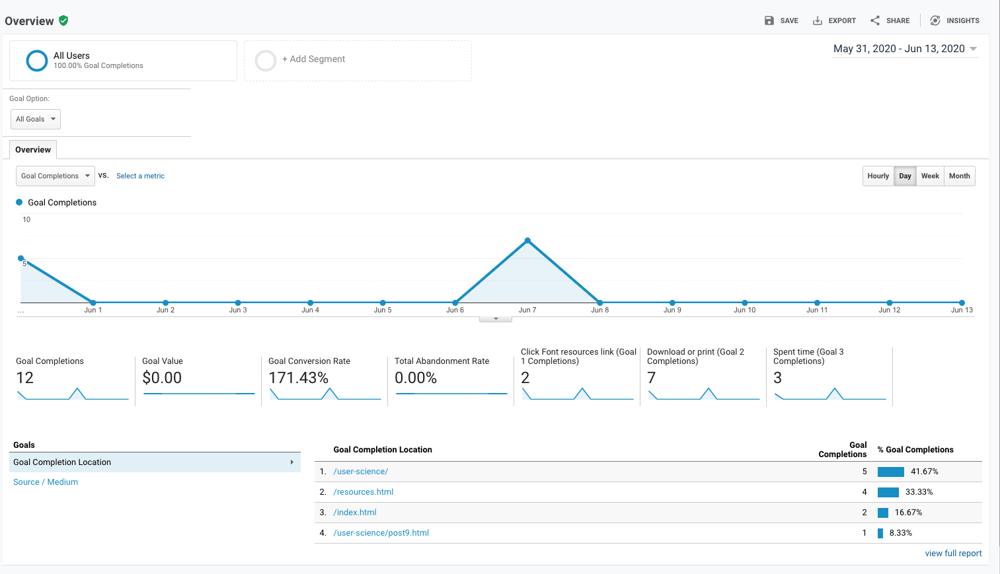
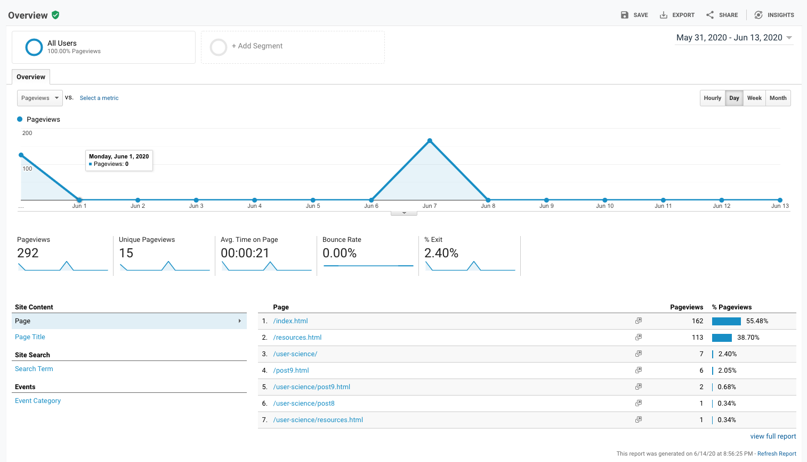
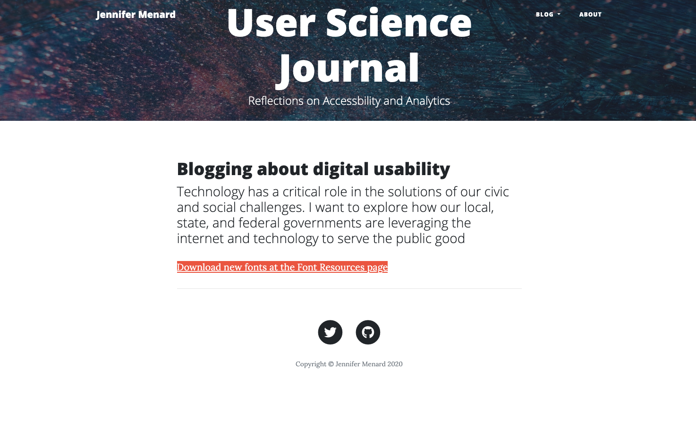

I've been working with Google Analytic and Optimize during the past three weeks to learn how users interact with my site and to drive visitors to download font resources. I started this blogging site about ten weeks ago to talk about user science and web accessibility evaluations--
A quick recap of my original goals are:
- Clicking "Font Resources" link on homepage (EVENT)
- Downloading one of the four fonts on the Font Resources page (EVENT)
- Visiting more than two pages during a visit (PAGE VIEWS)
My A/B test, using Google Optimize, was:
- Changing the location and color of my "Font Resource" button on my homepage
Content Experiment Results
Last week, I relocated the "Font Resource" link from the left, side bar on my homepage- to the center of the page. I changed the color, highlighting the text in pink. Low visitor engagement is a significant challenge because it resulted in a small amount of data for me to assess what works best. The data shows that I had two users click, "Font Resources" link, an increase of one from the week before.
 There were two users who clicked the "Font Resource" link.Have I been successful at driving my users to my goals?
Based on this data, I am driving users to complete my three stated goals. I would keep the link where it is-- I would add context, explaining to the user what can be found there. As it stands, I assess that visitors may be skeptical or not know what to expect if they clicked the link.
 There were 292 page views completed by 15 unique peopleWhat has seemed to hinder users in achieving my goals?
I think the design of my blogging site may not give visitors confidence because it looks like a preformatted site, rather than uniquely designed.
 current view of homepageWhat would the next steps be if you were going to continue developing this site?
I want to continue exploring how digital UX and accessibility features affect how people access health care services. So I think I am going to transition the site. For this particular project, the next steps I would take to develop this site is to solicit feedback from current users to learn what information or resources would better help them, engage with other bloggers writing about a similiar topic and continue using Google Analyics and Optimize to inform my decisions.
Are Google Analyics and Optimize usable?
Yes, I think Google Analytics breaks down its programs and features so its easily understood by people. Its a scable program containing basic features for new users but gives seasoned professionals more flexibility to tailor tools to meet their needs. I appreciate the support features and templated information. I did have trouble connecting Optimize-- that tracked my A/B testing. I didn't realize it wasn't working properly until two days into my testing period. I will continue to use both programs in the future.